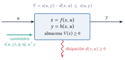
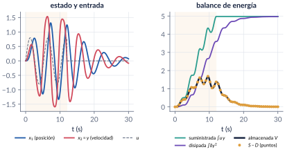
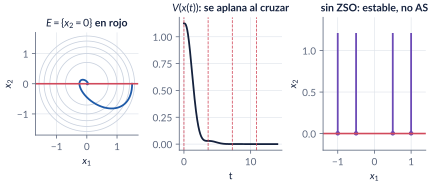
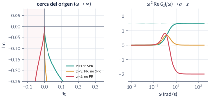
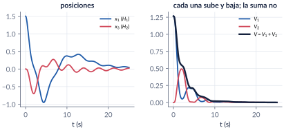
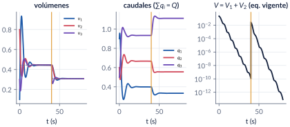

11. Pasividad y disipatividad
Semana 13 · dos clases
Un sistema pasivo no puede crear energía: lo que almacena nunca supera lo que tenía más lo que ha recibido por su puerto. De ese balance, sin resolver la ecuación diferencial, salen la estabilidad (con observabilidad en estado cero y LaSalle), la lectura en frecuencia (funciones reales positivas y el lema KYP), la estabilidad de interconexiones y una manera de diseñar controladores: agregar amortiguamiento. La parte termina con una prueba completa: la distribución de agua con la dinámica del replicador.
Al terminar esta parte usted podrá
- Escribir el balance de energía de un sistema con puertos y reconocer en él una desigualdad de disipación.
- Clasificar un sistema como pasivo, sin pérdidas, ISP, OSP o estrictamente pasivo, y decir dónde se disipa la energía.
- Concluir estabilidad a partir de la pasividad, y saber cuándo hacen falta la observabilidad en estado cero y LaSalle.
- Decidir si una función de transferencia es PR o SPR, en frecuencia y con el lema KYP.
- Probar la estabilidad de una interconexión sumando almacenamientos y diseñar por inyección de amortiguamiento y pasivación.
- Seguir la prueba de estabilidad del reparto de agua con el replicador.
Ruta de las clases
| Clase | Qué se ve | Handout | Scripts |
|---|---|---|---|
| 1 | Balance de energía, señales \(\Ldos\), disipatividad, almacenamiento disponible, pasividad sin memoria y de modelos de estado, OSP + ZSO + LaSalle | §11.1–11.6 | C11_Ej1–C11_Ej7 |
| 2 | Funciones reales positivas y KYP, interconexión, aplicación al reparto de agua | §11.7, 11.8, 11.10 | C11_Ej8–C11_Ej10, C11_Ej13, C11_Ej14, crearModelo_LazoPasivo, crearModelo_Agua |
| lectura | Control basado en pasividad: amortiguamiento, compensación de gravedad, cascadas | §11.9 | C11_Ej11, C11_Ej12, crearModelo_Pendulo |
Lo esencial, en una página

Disipatividad y pasividad (Willems, 1972; Khalil, Def. 6.3)
El sistema \(\dot x=f(x,u)\), \(y=h(x,u)\) es disipativo respecto a la tasa de suministro \(s(u,y)\) si existe \(V\ge0\) con \[ V\bigl(x(t_1)\bigr)\le V\bigl(x(t_0)\bigr)+\int_{t_0}^{t_1}s\,\dif t \qquad\text{o, si }V\in\Cont1,\qquad \Vdot\le s(u,y)\ \ \forall (x,u). \] Es pasivo si eso vale con \(s=u\T y\). Es OSP si \(u\T y\ge\Vdot+y\T\rho(y)\) con \(y\T\rho(y)>0\), y estrictamente pasivo si \(u\T y\ge\Vdot+\psi(x)\) con \(\psi\) definida positiva.

Trampa: OSP no basta sin observabilidad en estado cero
“\(\Vdot\le0\) y \(\Vdot=0\) solo donde \(y=0\); luego \(x\to0\).” Falso: \(\dot x_1=0\), \(\dot x_2=-x_2+u\), \(y=x_2\) es OSP con \(V\) definida positiva, y \(x_1\) no se mueve. Lo correcto: OSP + ZSO ⇒ AS, por el principio de invarianza.

Funciones reales positivas y lema KYP
\(G(s)\) es SPR si es Hurwitz, \(\Re G(\jw)>0\) para todo \(\omega\) y, si \(G(\infty)=0\), \(\lim_{\omega\to\infty}\omega^2\Re G(\jw)>0\). El lema KYP: \(G\) es SPR si y solo si existen \(P>0\), \(L\), \(W\), \(\epsilon>0\) con \[ PA+A\T P=-L\T L-\epsilon P,\qquad PB=C\T-L\T W,\qquad W\T W=D+D\T , \] y entonces el sistema es estrictamente pasivo con \(V=\tfrac12x\T Px\).

Interconexión
En la conexión estándar (\(e_1=u_1-y_2\), \(e_2=u_2+y_1\)) las potencias se cancelan: \(e_1\T y_1+e_2\T y_2=u_1\T y_1+u_2\T y_2\). Pasivo con pasivo es pasivo, y \(V_1+V_2\) es función de Lyapunov del lazo. Cada almacenamiento puede subir; solo la suma baja.

Aplicación: reparto de agua con el replicador (Ramírez-Llanos y Quijano, 2010)
Los tanques son OSP (la descarga de Torricelli disipa) y el replicador es sin pérdidas con la entropía relativa \(V_2=\frac1Q\sum_iq_i^*\ln(q_i^*/q_i)\). La cancelación da \(\Vdot\le0\); LaSalle, con los tanques como “observador” de los caudales, da estabilidad asintótica en \(\{q_i>0\}\).

Explorador interactivo
Cuatro pestañas con los modelos del handout. Los cálculos se hacen en su navegador con Runge–Kutta de paso fijo (los mismos modelos de los scripts C11_Ej1, C11_Ej8, C11_Ej10 y C11_Ej13).
Retos con el explorador
- Balance: ponga \(\delta<0\). ¿Qué término del balance cambia de signo? ¿Sigue siendo pasivo el sistema?
- PR/SPR: con \(a=3\), \(b=2\), mueva \(z\) de \(1.5\) a \(5\). ¿En qué valor exacto deja de ser SPR? ¿Y de ser PR? Pruebe \(z=1\): ¿qué avisa el explorador y por qué?
- Interconexión: cambie la retroalimentación a positiva con \(x_1(0)=0.3\). ¿Qué le pasa a \(V\)?
- Agua: ponga \(q_3(0)=0\) y luego \(q_3(0)=0.0001\). Compare el tiempo que tarda en llegar al equilibrio.
Códigos de esta parte
Los bloques salen directamente de los archivos del repositorio. Ejecute antes iniciarCurso. verificarCap11 comprueba los números del handout (39/39).
Balance de energía a lo largo de una simulación (§11.2).
% No se encontró ../../codigo/cap11_pasividad/C11_Ej1_MasaResorte.mPasivo con pendiente negativa (§11.4).
% No se encontró ../../codigo/cap11_pasividad/C11_Ej3_SinMemoria.mLa prueba de que un sistema no es pasivo (§11.5).
% No se encontró ../../codigo/cap11_pasividad/C11_Ej6_PasividadLocal.mOSP + ZSO + LaSalle (§11.6).
% No se encontró ../../codigo/cap11_pasividad/C11_Ej7_LaSalleRLC.mLa familia \(G_z\) y la prueba esPR (§11.7).
% No se encontró ../../codigo/cap11_pasividad/C11_Ej8_PR_SPR.mLas ecuaciones KYP (§11.7).
% No se encontró ../../codigo/cap11_pasividad/C11_Ej9_KYP.mDos osciladores en lazo (§11.8).
% No se encontró ../../codigo/cap11_pasividad/C11_Ej10_Interconexion.mEl modelo, una sola función para scripts y Simulink.
% No se encontró ../../codigo/cap11_pasividad/modeloAgua.mCambio de demanda (§11.10).
% No se encontró ../../codigo/cap11_pasividad/C11_Ej13_Agua.mLa trampa de las caras (§11.10).
% No se encontró ../../codigo/cap11_pasividad/C11_Ej14_AguaCaras.mPD con y sin compensación de gravedad (§11.9).
% No se encontró ../../codigo/cap11_pasividad/C11_Ej11_ControlPasividad.mEscape en tiempo finito de una cascada (§11.9).
% No se encontró ../../codigo/cap11_pasividad/C11_Ej12_Cascada.mLos modelos se construyen por código: ejecute el script y se crea, se simula y se compara con ode45.
LazoPasivo.slx: dos osciladores en la conexión estándar, con \(V_1\), \(V_2\) y \(V\) en línea.
% No se encontró ../../codigo/cap11_pasividad/crearModelo_LazoPasivo.mVideos
| Video | Qué muestra | Script |
|---|---|---|
| V11.1 · Balance de energía | Energía suministrada, disipada y almacenada de la masa con resorte. | C11_Video_Balance.m |
| V11.2 · LaSalle en el RLC | La trayectoria toca \(\{\Vdot=0\}\) y no se queda. | C11_Video_LaSalle.m |
| V11.3 · De SPR a no PR | El cero \(z\) barre la familia \(G_z\). | C11_Video_Nyquist.m |
| V11.4 · Interconexión | La energía pasa de \(H_1\) a \(H_2\); la suma solo baja. | C11_Video_Interconexion.m |
| V11.5 · Agua | Tanques, caudales y \(V\) con cambio de demanda. | C11_Video_Agua.m |
Problemas
Los problemas del handout (§11.12) tienen cada uno una trampa; las soluciones seleccionadas están en §11.13.